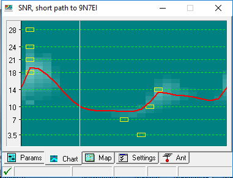

|
I can (HAPPILY) confirm his comments. VOA Cap said no way but
how could a 35' high, non-resonant (center fed 340' center fed)
with half of one end wrapped around a tree and on a 5' fence work
Austral and Pitcairn on 160 last week (600 watts helps worked all
other bands too). Like I've said, it's magic and it's part of
what makes this hobby fun and interesting. I've worked AF on 80M
before but this was ATNO, extra special. Not long after I posted, they went silent. While it could have been a Slim, I don't think so. It was also sunrise there and they weren't working a lot of stations but there was a pileup too. They're on vacation and the rasher of bacon was probably calling. We'll see once they post the next log update. Now if Nepal would ignore the charts and try something unexpected, the rest of the world would be happy to work them. Even with power limitations on 30, it's worth trying, that band is always open SOMEwhere. ;-) I'd be interested to know how the '7300's are holding up; my expectation is that they're not. VOA Cap indicates 30-17M might have a shot ~1 UTC, another
whisper at 11:30-18:30 for 40-20M... and its set for my dipole
rating. Anyone with a better system has a much better shot. If
the reflector accepts a pic, here's what I'm seeing. Not great
but all we need is the chance to try.  Back at it, Rick nhc On 3/12/2017 11:09 PM, Bill Frantz via
Chat wrote:
On 3/12/17 at 10:58 PM, chat@ncdxc.org (Rick WA6NHC via Chat) wrote: |